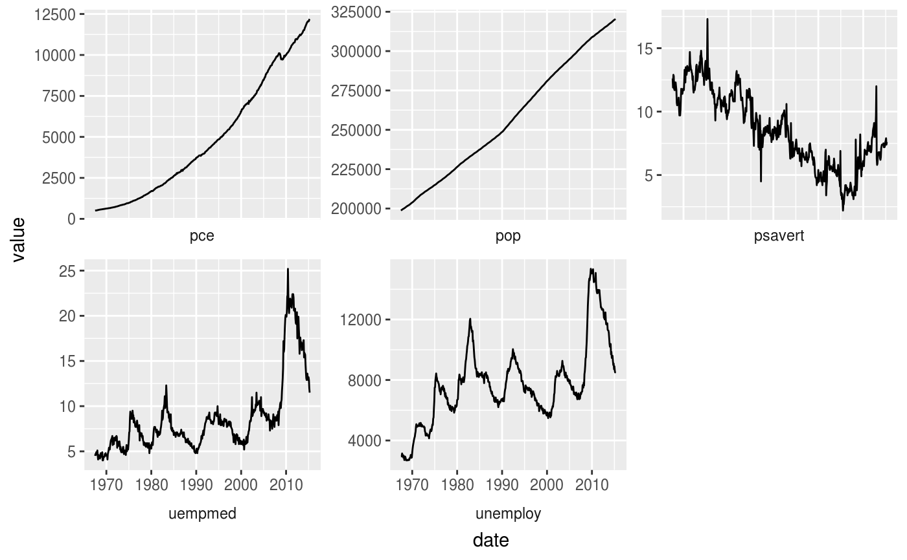
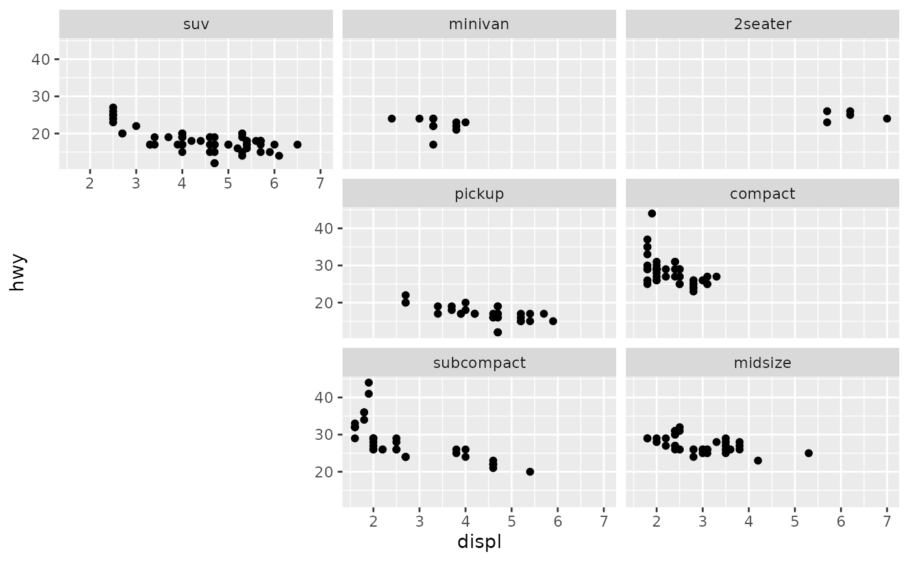
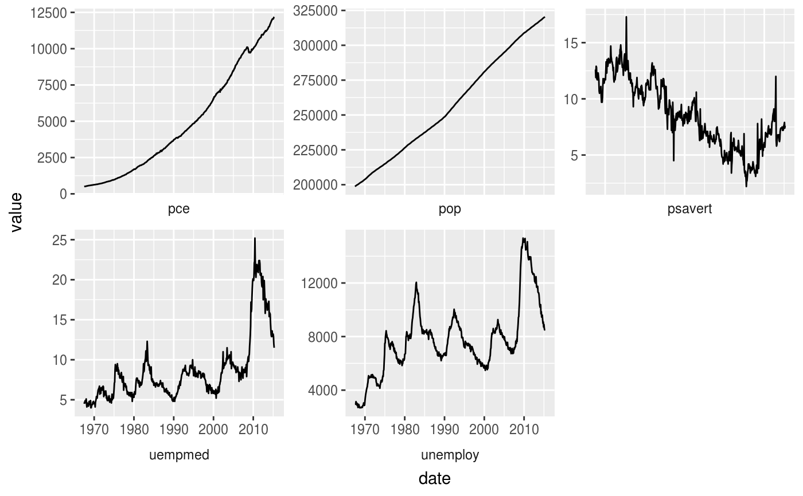
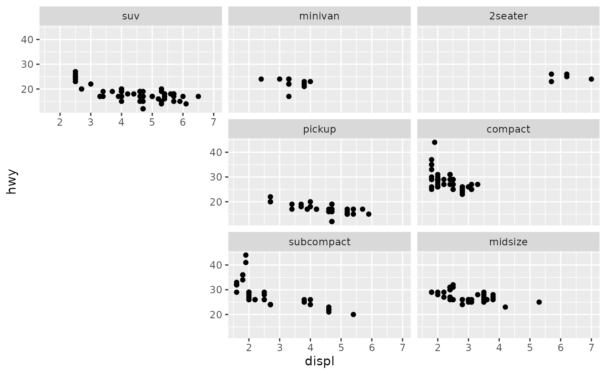

facet_wrap() wraps a 1d sequence of panels into 2d. This is generally
a better use of screen space than facet_grid() because most
displays are roughly rectangular.
Usage
facet_wrap(
facets,
nrow = NULL,
ncol = NULL,
scales = "fixed",
space = "fixed",
shrink = TRUE,
labeller = "label_value",
as.table = TRUE,
switch = deprecated(),
drop = TRUE,
dir = "h",
strip.position = "top",
axes = "margins",
axis.labels = "all"
)Arguments
- facets
A set of variables or expressions quoted by
vars()and defining faceting groups on the rows or columns dimension. The variables can be named (the names are passed tolabeller).For compatibility with the classic interface, can also be a formula or character vector. Use either a one sided formula,
~a + b, or a character vector,c("a", "b").- nrow, ncol
Number of rows and columns.
- scales
Should scales be fixed (
"fixed", the default), free ("free"), or free in one dimension ("free_x","free_y")?- space
If
"fixed"(default), all panels have the same size and the number of rows and columns in the layout can be arbitrary. If"free_x", panels have widths proportional to the length of the x-scale, but the layout is constrained to one row. If"free_y", panels have heights proportional to the length of the y-scale, but the layout is constrained to one column.- shrink
If
TRUE, will shrink scales to fit output of statistics, not raw data. IfFALSE, will be range of raw data before statistical summary.- labeller
A function that takes one data frame of labels and returns a list or data frame of character vectors. Each input column corresponds to one factor. Thus there will be more than one with
vars(cyl, am). Each output column gets displayed as one separate line in the strip label. This function should inherit from the "labeller" S3 class for compatibility withlabeller(). You can use different labeling functions for different kind of labels, for example uselabel_parsed()for formatting facet labels.label_value()is used by default, check it for more details and pointers to other options.- as.table
If
TRUE, the default, the facets are laid out like a table with highest values at the bottom-right. IfFALSE, the facets are laid out like a plot with the highest value at the top-right.- switch
By default, the labels are displayed on the top and right of the plot. If
"x", the top labels will be displayed to the bottom. If"y", the right-hand side labels will be displayed to the left. Can also be set to"both".- drop
If
TRUE, the default, all factor levels not used in the data will automatically be dropped. IfFALSE, all factor levels will be shown, regardless of whether or not they appear in the data.- dir
Direction: either
"h"for horizontal, the default, or"v", for vertical. When"h"or"v"will be combined withas.tableto set final layout. Alternatively, a combination of"t"(top) or"b"(bottom) with"l"(left) or"r"(right) to set a layout directly. These two letters give the starting position and the first letter gives the growing direction. For example"rt"will place the first panel in the top-right and starts filling in panels right-to-left.- strip.position
By default, the labels are displayed on the top of the plot. Using
strip.positionit is possible to place the labels on either of the four sides by settingstrip.position = c("top", "bottom", "left", "right")- axes
Determines which axes will be drawn in case of fixed scales. When
"margins"(default), axes will be drawn at the exterior margins."all_x"and"all_y"will draw the respective axes at the interior panels too, whereas"all"will draw all axes at all panels.- axis.labels
Determines whether to draw labels for interior axes when the scale is fixed and the
axisargument is not"margins". When"all"(default), all interior axes get labels. When"margins", only the exterior axes get labels, and the interior axes get none. When"all_x"or"all_y", only draws the labels at the interior axes in the x- or y-direction respectively.
See also
The facet wrap section of the online ggplot2 book.
Examples
p <- ggplot(mpg, aes(displ, hwy)) + geom_point()
# Use vars() to supply faceting variables:
p + facet_wrap(vars(class))
 # Control the number of rows and columns with nrow and ncol
p + facet_wrap(vars(class), nrow = 4)
# Control the number of rows and columns with nrow and ncol
p + facet_wrap(vars(class), nrow = 4)
 # \donttest{
# You can facet by multiple variables
ggplot(mpg, aes(displ, hwy)) +
geom_point() +
facet_wrap(vars(cyl, drv))
# \donttest{
# You can facet by multiple variables
ggplot(mpg, aes(displ, hwy)) +
geom_point() +
facet_wrap(vars(cyl, drv))
 # Use the `labeller` option to control how labels are printed:
ggplot(mpg, aes(displ, hwy)) +
geom_point() +
facet_wrap(vars(cyl, drv), labeller = "label_both")
# Use the `labeller` option to control how labels are printed:
ggplot(mpg, aes(displ, hwy)) +
geom_point() +
facet_wrap(vars(cyl, drv), labeller = "label_both")
 # To change the order in which the panels appear, change the levels
# of the underlying factor.
mpg$class2 <- reorder(mpg$class, mpg$displ)
ggplot(mpg, aes(displ, hwy)) +
geom_point() +
facet_wrap(vars(class2))
# To change the order in which the panels appear, change the levels
# of the underlying factor.
mpg$class2 <- reorder(mpg$class, mpg$displ)
ggplot(mpg, aes(displ, hwy)) +
geom_point() +
facet_wrap(vars(class2))
 # By default, the same scales are used for all panels. You can allow
# scales to vary across the panels with the `scales` argument.
# Free scales make it easier to see patterns within each panel, but
# harder to compare across panels.
ggplot(mpg, aes(displ, hwy)) +
geom_point() +
facet_wrap(vars(class), scales = "free")
# By default, the same scales are used for all panels. You can allow
# scales to vary across the panels with the `scales` argument.
# Free scales make it easier to see patterns within each panel, but
# harder to compare across panels.
ggplot(mpg, aes(displ, hwy)) +
geom_point() +
facet_wrap(vars(class), scales = "free")
 # When scales are constant, duplicated axes can be shown with
# or without labels
ggplot(mpg, aes(displ, hwy)) +
geom_point() +
facet_wrap(vars(class), axes = "all", axis.labels = "all_y")
# When scales are constant, duplicated axes can be shown with
# or without labels
ggplot(mpg, aes(displ, hwy)) +
geom_point() +
facet_wrap(vars(class), axes = "all", axis.labels = "all_y")
 # To repeat the same data in every panel, simply construct a data frame
# that does not contain the faceting variable.
ggplot(mpg, aes(displ, hwy)) +
geom_point(data = transform(mpg, class = NULL), colour = "grey85") +
geom_point() +
facet_wrap(vars(class))
# To repeat the same data in every panel, simply construct a data frame
# that does not contain the faceting variable.
ggplot(mpg, aes(displ, hwy)) +
geom_point(data = transform(mpg, class = NULL), colour = "grey85") +
geom_point() +
facet_wrap(vars(class))
 # Use `strip.position` to display the facet labels at the side of your
# choice. Setting it to `bottom` makes it act as a subtitle for the axis.
# This is typically used with free scales and a theme without boxes around
# strip labels.
ggplot(economics_long, aes(date, value)) +
geom_line() +
facet_wrap(vars(variable), scales = "free_y", nrow = 2, strip.position = "top") +
theme(strip.background = element_blank(), strip.placement = "outside")

# }
# The two letters determine the starting position, so 'tr' starts
# in the top-right.
# The first letter determines direction, so 'tr' fills top-to-bottom.
# `dir = "tr"` is equivalent to `dir = "v", as.table = FALSE`
ggplot(mpg, aes(displ, hwy)) +
geom_point() +
facet_wrap(vars(class), dir = "tr")

# Use `strip.position` to display the facet labels at the side of your
# choice. Setting it to `bottom` makes it act as a subtitle for the axis.
# This is typically used with free scales and a theme without boxes around
# strip labels.
ggplot(economics_long, aes(date, value)) +
geom_line() +
facet_wrap(vars(variable), scales = "free_y", nrow = 2, strip.position = "top") +
theme(strip.background = element_blank(), strip.placement = "outside")

# }
# The two letters determine the starting position, so 'tr' starts
# in the top-right.
# The first letter determines direction, so 'tr' fills top-to-bottom.
# `dir = "tr"` is equivalent to `dir = "v", as.table = FALSE`
ggplot(mpg, aes(displ, hwy)) +
geom_point() +
facet_wrap(vars(class), dir = "tr")
